What is Scrapyard?
Scrapyard is a Firefox bookmarking extension where you can store and organize bookmarks, page fragments, or complete HTML pages and PDF documents in unlimited quantities. Unlike most others ScrapBook alternatives, Scrapyard does not require installing external tools for most of its functionality by keeping the data in the browser internal storage. If necessary, it is possible to keep your content on disk for synchronization through a cloud service, or import/export all your bookmarks in org-mode or JSON formats. Scrapyard also supports import of RDF archives of the legacy ScrapBook addon.
Where to Find Scrapyard
Scrapyard is accessible through the dropdown menu of the Firefox sidebar as shown in the image below. The sidebar itself could be opened with the corresponding toolbar button: . In the more recent versions of Firefox, it may be necessary to add this button to the toolbar manually by selecting "Customize Toolbar..." at Main menu > More tools.
The Alt+Y keyboard shortcut allows opening Scrapyard directly.
Keyboard shortcuts provided by any extension could be
customized in Firefox settings.
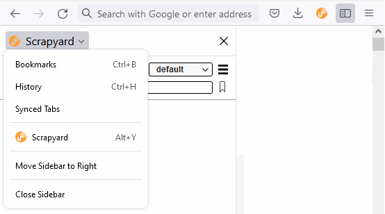
Main Features
Capturing Pages
To capture a web page or its fragment, select the part of the page you want to archive, open the Scrapyard popup window by clicking its icon on the browser toolbar, choose the destination shelf and folder, then press the "Bookmark" or "Archive" button. The "Bookmark" button stores only web-page URLs as bookmarks. The "Archive" button captures the current selection, the whole page, if there is no active selection, or the whole document, if the opened link is not a web-page (for example, a PDF file).
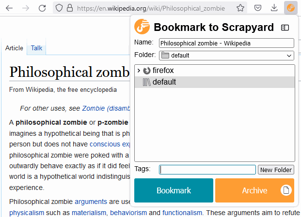
The following keyboard shortcuts allow to quickly capture the active tab into the default bookmark shelf:
Alt+Q- bookmark the current tab to the default shelf.Alt+W- archive the current tab or selection to the default shelf.
In the bookmark tree, archived pages are marked with italic font, while ordinary bookmarks have the regular one.
Bookmark Shelves
It is possible to create an unlimited amount of bookmark shelves to structure your bookmarks. The shelf named "everything" allows to browse and search through all existing bookmarks. Scrapyard built-in shelves are listed in bold font and cannot be deleted or renamed.
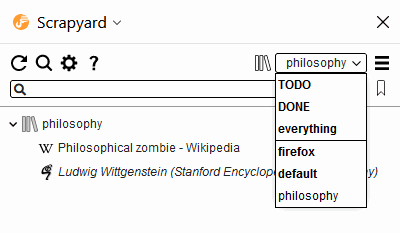
Search
The search input field at the Scrapyard sidebar allows filtering bookmarks of the current shelf by content and various attributes. Use the "Everything" shelf to search through all bookmarks. Although the Sidebar filter is reasonably fast, it matches all items that contain every entered word longer than 2 characters in any order and distance. Use the full-text search if you need exact results.
Filtering by date supports simple queries:
- 2021-02-24 - the exact date.
- before 2021-02-24 - before the specified date (the specified date is not included).
- after 2021-02-24 - after the specified date (the specified date is not included).
- between 2021-02-24 and 2021-03-24 - between the specified dates (the specified dates are included).
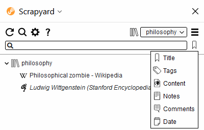
Additionally, it is possible to search through all bookmarks by title or URL from the Firefox URL-bar after entering the special "scr" keyword followed by a space:
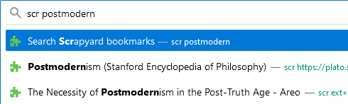
If URL-bar search text begins with a plus sign (+), Scrapyard will interpret the rest of the
text as a tag name and will search by tags instead. By assigning unique tags to bookmarks
(with no leading plus sign) you may quickly open dedicated bookmarks without
using a mouse. It is possible to activate Firefox URL-bar with the Ctrl+L keyboard shortcut.
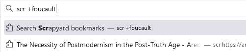
By creating dedicated iShell commands to open specific bookmarks, you may access them even more quickly. A few examples could be found in the Scrapyard automation API documentation.
Full-text search is accessible with the corresponding sidebar button: and allows to find and highlight the exact occurrences of a phrase in the content of archived HTML pages.
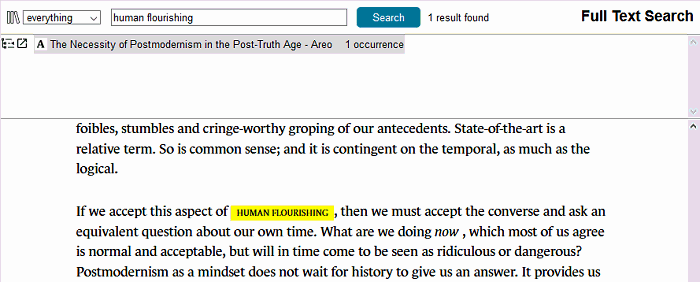
Firefox Bookmarks
Scrapyard seamlessly integrates with Firefox bookmarks, so there is no need to switch to the built-in bookmark manager. It is possible to attach comments and TODO states to Firefox bookmarks displayed in Scrapyard, although they will be lost if the bookmarks are deleted from the Firefox UI, or after the "Enable Firefox bookmarks integration" option in settings is unchecked. Firefox bookmarks are included in the export as a separate shelf, so import will leave the current Firefox bookmark state intact.
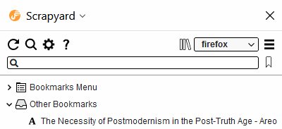
Cloud Bookmarking
Adding or copying/pasting bookmarks into a special shelf named Cloud makes them available across different Firefox instances that use a cloud provider with the same credentials. Cloud providers are configurable at the addon settings. It is possible to authorize in several cloud providers and quickly switch between them (currently only Dropbox and OneDrive are supported).
Scrapyard application for Android allows to save links and text into the Cloud shelf from mobile devices, and to browse contents of this shelf. See the corresponding section below for more details.
It is not necessary to install native cloud clients or the Scrapyard helper application on any OS to use the cloud shelf. Just a Dropbox or a personal Microsoft account is required.
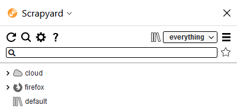
Sharing Bookmarks
A bookmark or archive could be shared to either Pocket or a cloud service through the "Share" context menu. Files that are shared to Dropbox or OneDrive appear at the "Apps/Scrapyard" folder. Only links could be shared to the Pocket application. The "Cloud" menu item copies any selected items to the Scrapyard Cloud shelf.
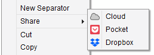
Synchronization
The cloud shelf is aimed primarily for sharing from mobile devices. The Sync option allows to maintain an actual copy of Scrapyard content as a set of files on disk that could be shared and picked up by different Scrapyard instances through a cloud provider of your choice. This feature requires the helper application version 0.5 or above. The synchronized bookmarks shared through Dropbox or OneDrive also could be browsed in the Scrapyard application for Android.
Note that due to potentially large volume of synchronized content, synchronization is not automatic, and is not performed, for example, after you added or deleted a bookmark. To receive or send changes to the Sync storage on the disk you need to manually initiate synchronization with the corresponding sidebar button. There is an option to synchronize automatically in the background for every hour. Please do not close Firefox while the Scrapyard synchronization indicator on the browser toolbar is active.
The synchronization algorithm works as follows:
- Just after the Sync option is enabled, the content of the Sync storage is mutually merged with the content of the Scrapyard database, nothing is deleted.
- During the following synchronizations, any changes (modifications, additions, and deletions) found in the Sync storage are propagated to Scrapyard and vice versa.
- The items from restored backups are considered as newly added. If a restored backup deletes any existing items, they will also be deleted in the Sync storage.
Use the path <cloud folder>/Apps/Scrapyard/Sync to make your content available on mobile devices.
Because this feature can introduce irreversible changes, please consider taking a full backup on every Firefox instance where you intend to enable it. If you need to reset Scrapyard or Sync storage to perform a clean synchronization, use the corresponding options at the advanced settings. "Cloud" and "Firefox" bookmark shelves are excluded from synchronization and are not affected by the reset.
Firefox Multi-Account Containers
Any Scrapyard bookmark could be opened in one of the Firefox Multi-Account containers, available through the "Open in Container" context menu of a bookmark, archive, or folder. Scrapyard will open the original URL of an archive with this menu, and all the items located inside a folder, if a folder is selected.
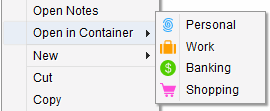
Additionally, it is possible to assign a container to a bookmark in its property dialog, as
it is shown in the image below. Such bookmarks will automatically open in the corresponding
container.
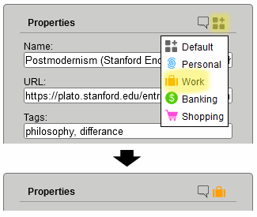
TODO
It may be convenient to prioritize your bookmarks for processing with TODO states. Each bookmark may have one of the following TODO priorities: TODO, WAITING, or POSTPONED. You may find all your prioritized bookmarks at the built-in shelf named TODO, sorted in the corresponding order. All bookmarks marked as DONE or CANCELLED are displayed on the DONE shelf.
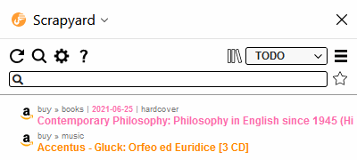
If the path of the bookmark folder above its title provides not enough context, it is possible to fill the "Details" and "Date" fields at the bookmark property dialog. Only ISO (YYYY-MM-DD) date format is supported. Expired TODO items will be displayed first regardless of the assigned state.
Markers
Every archived page contains a toolbar that offers several types of text markers to highlight sections of interest. The "Auto open" check makes the marker menu to open automatically when some text is selected. The "Edit document" button allows to clean the document of unnecessary elements by direct editing of its content. It is also possible to type in something, press F7 to display the caret. The DOM Eraser tool is able to remove any element on the page with a single click. The HTML code of a page may also be manually modified through the browser developer tools accessible through the F12 keyboard key. Press the "Save" button after you have finished document editing.
The size of a saved page in bytes and its creation date are available through the page info icon at the right-most toolbar side.

There is an option to not display the editing toolbar automatically.
The toolbar always could be toggled by the Ctrl+Alt+T key combination.
Bookmark Comments
While the "Details" field in the bookmark properties is intended for display at the TODO shelf, the bookmark property dialog also allows entering quick comments by clicking on the "callout" icon at its top-right corner.
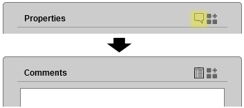
Subsequent clicks on the icon alternate between the comment input field and bookmark properties.
The comment icon of bookmarks with filled-in comments takes the form of a "filled callout".
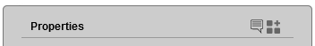
Notes
It is possible to attach more elaborate text notes with hyperlinks and images to every bookmark, or even create dedicated note-only bookmarks. Click "New" > "(Attached) Notes" in the context menu of a folder, bookmark, or archive to create a note-only bookmark or attach notes. Items with non-empty notes are highlighted by the underlined text in the bookmark tree.
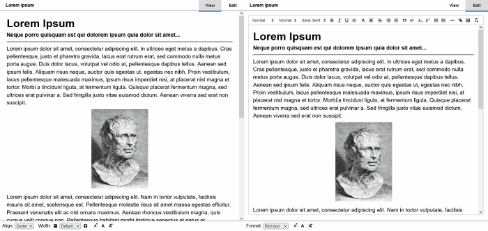
Notes could be entered in rich text format (using a visual editor), Markdown, Org-mode markup, or plain text. The format selector dropdown list is located in the bottom left corner of the "Edit" tab. Notes in Org format may have an automatically generated table of contents. Insert the example markup into the note editor to explore what options are available.
The text in the note editor is saved automatically, although you may save it at any time with the Ctrl+S
keyboard shortcut.
Referencing to a bookmark or archive
To make a reference to a Scrapyard bookmark or archive from the note markup, create a link with the following URL:
ext+scrapyard://<BOOKMARK UUID>, for example:
ext+scrapyard://A4D409A0D1034D9BA0863E9DA8CE8FE7
When necessary, it is possible to add a hash with a link description:
ext+scrapyard://A4D409A0D1034D9BA0863E9DA8CE8FE7#short-bookmark-description
To refer the notes of a bookmark add notes: before the UUID:
ext+scrapyard://notes:A4D409A0D1034D9BA0863E9DA8CE8FE7
UUID of a bookmark is available from its property dialog:
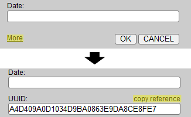
Import/Export
Scrapyard allows importing bookmarks in Netscape HTML format which you may obtain from Firefox, Chrome, or other web-browsers. Its own collections of bookmarks and archived pages could also be exported or imported in ORG and JSON formats through the corresponding items of the shelf operations menu:
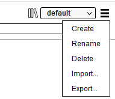
Importing Legacy ScrapBook RDF Archives
To import legacy ScrapBook RDF archives you need to install the Scrapyard helper application. There are two import modes:
- The full import. In this mode, the archived files are completely transferred into the browser internal database. This may take a substantial amount of time.
- The quick import (default). Import in this mode only recreates the RDF directory structure in the Scrapyard database. The archived ScrapBook files are served from the disk by the helper application.
The quick import may be useful for arranging the contents of an RDF archive before the full import. See the "Import RDF" tab of the settings page for more details about the available import options.
Shelves imported in the quick mode are marked with a tape reel icon. It is possible to add new archives to these shelves (simple bookmarks are not included in the underlying RDF file), and physically delete RDF entries along with the attached files. Although when a quickly imported shelf itself is deleted, the corresponding RDF file and the archived pages are left intact. Some features, such as page editing, full-text search, and bookmark transferring/copying are not available for the shelves imported in the quick mode.
It is possible to edit the path of the imported RDF file through the "RDF Directory..." context menu item of a shelf.
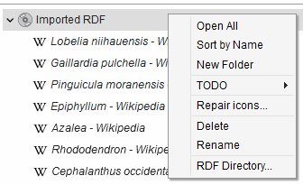
Backup
It is possible to backup contents of any bookmark shelf to a designated directory on the hard drive by using the backup manager. This feature requires the helper application version 0.3 or above. Backups will be automatically compressed if the corresponding option is checked. Compression method and level could be chosen in the advanced settings. Methods with better compression require more processing time.
A backup could be restored to the original shelf, imported as a new separate shelf, or deleted from the disk through the backup list context menu.
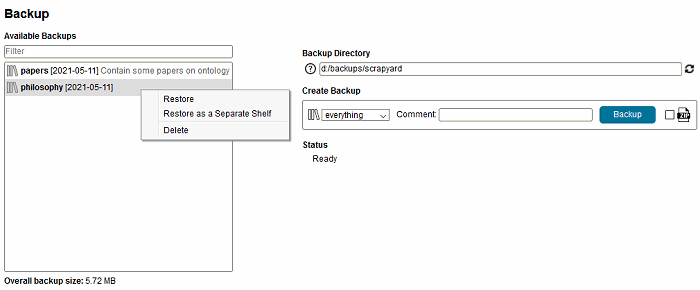
Link Checker
The automatic link checker allows finding broken links or URL duplicates. Its mode of operation may be selected through the "Check for" dropdown list. Since different archived page fragments may share the same original URL, link checker results in the "check for duplicates" mode may not always mean the duplication of content. Please check the duplicate bookmarks before deleting them.
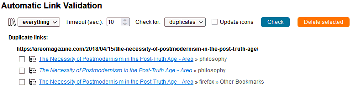
Displaying Random Bookmarks
Random bookmarks from your collection could be displayed at the bottom of the Scrapyard sidebar. Check the corresponding option in the settings to enable this feature. The displayed bookmark is changed every 5 minutes, it also could be updated by a user request through the "Refresh" button. The "Find" button allows locating the bookmark at the Scrapyard sidebar by opening its shelf and folder.
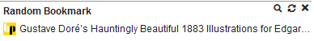
Saving Links and Content from Mobile Applications
Scrapyard application for Android allows saving links and content into the Scrapyard Cloud shelf from mobile devices. It uses the standard Android sharing functionality, which may be tricky to deal with, as it is shown in the examples below.
At first, you need to enable cloud shelf in Scrapyard by checking the corresponding option at the "Cloud" setting tab and sign into a cloud service. The bookmarks also may be shared into the default Sync shelf, if synchronization is enabled, although it is recommended to use the cloud shelf for the sharing from mobile devices.
Then you need to install the Scrapyard application on your device and sign into the same cloud service account from its "Cloud Providers" screen.
To share a link from the application of choice, find and tap the "Share" button or the "Share" menu item in it. The example below highlights the "Share" button in the mobile Firefox application.

After that, you need to select the destination application to send the URL into. The interface may differ from app to app, and you may need to scroll or press additional buttons to find the necessary sharing target. The icon of the Scrapyard Android application is highlighted in the image below. Tap on it and you are done.

Sharing of text is usually performed from the corresponding selection toolbar:

It is only possible to share plain text without links and images from the Android platform. Generally, selected text is shared to Scrapyard in the form of notes without a source URL. To save source URL, share text from the Pocket app or the recent versions of Chrome browser.
The application also offers basic browsing functionality for the Cloud shelf and synchronized bookmarks. Bookmarks, archived pages, and notes could be opened directly. Archived PDF documents and other binary files could be downloaded to the device storage memory. There is a long-tap context menu which allows to view attached notes and delete bookmarks and folders.
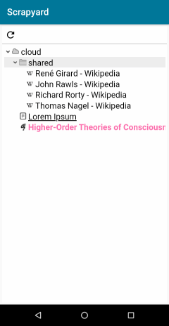
Text Command Interface
It is possible to issue commands to Scrapyard through the text command interface offered by iShell Extension. To control Scrapyard with text commands just install iShell. In most cases, the command interface allows to significantly reduce the number of actions needed to create a bookmark or to archive a page.
The "shelf" Command
With the "shelf" command you can quickly switch to a shelf or folder, or even create a new one without using a mouse.

The "bookmark" and "archive" Commands
Use the "bookmark" or "archive" commands with the corresponding arguments to bookmark/archive a page into the specified destination. The arguments allow specifying bookmark title, path, details, tags, TODO state, and TODO deadline. Folders in the bookmark path will be autocompleted by iShell and created in Scrapyard if they do not exist. Note that due to the quirks of iShell parser spaces are not welcomed in folder names.
The first folder in the path is always interpreted as a shelf name. The tilde (~) character may be used in place of the "default" shelf. Contents of the Firefox "Bookmarks Menu" and "Other Bookmarks" bookmark folders may be accessed with the "@" and "@@" shortcuts respectively.
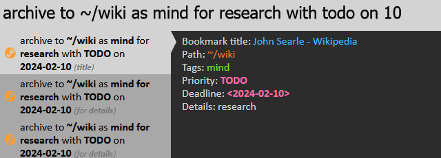
The "copy-at" and "move-at" Commands
Use these commands to quickly copy selected bookmarks to a desired shelf/folder without using the context menu and navigating through the shelf list and tree. It is possible to select bookmarks without opening them by holding Ctrl or Shift keys.
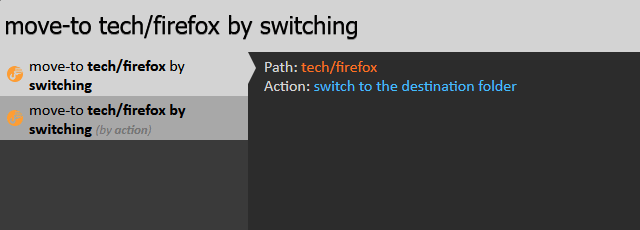
The commands accept an additional "by switching" argument that will open the destination folder after moving or copying.
The "scrapyard" Command
The "scrapyard" command allows browsing and search through the collection of bookmarks at the specified destination. See iShell command help for more details.

Creating Custom Capture Commands
If you often save bookmarks with similar properties to the same destination, it is possible to create custom capture commands with predefined parameters. The "CAPTURE" link at the bottom-right corner of iShell command editor allows to insert a template of such command. In addition to the predefined parameters, custom capture commands allow specifying comma-separated CSS selectors for elements that will automatically be retained or deleted. A custom CSS style could be added to the captured document through the "style" option.
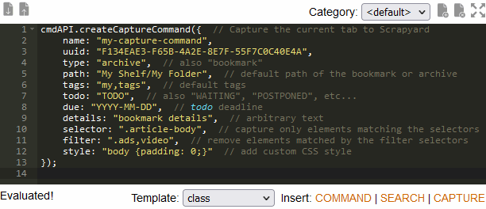
Automation
The automation API provided by Scrapyard allows to programmatically create, modify, and delete bookmarks or page archives from iShell commands and your own extensions. See the automation API documentation for more details.